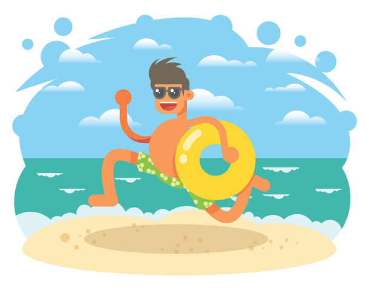
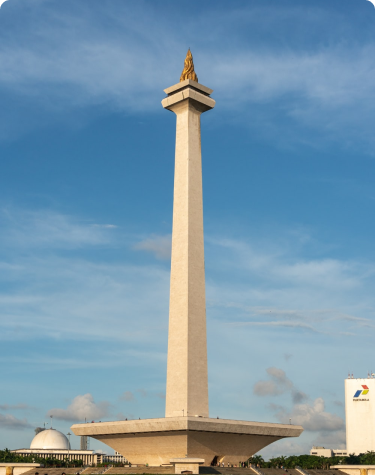
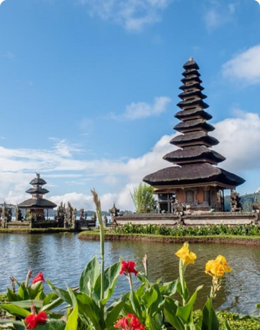
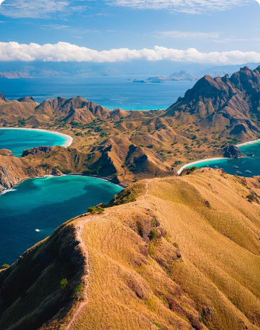

PAYMENT COMPLETED
Thank you for ordering with TravelTix
Have a safe flight!
Recommended for you

Jakarta
Sebagai Monumen Nasional Indonesia. Monas merupakan tempat untuk berwisata Museum Sejarah dan kesenian Indonesia. Dilengkapi dengan fasilitas olahraga dan taman rusa membuat Monas salah satu destinasi populer

Bali
Sebagai jantung pariwisata Indonesia. Bali merupakan tempat yang pas untuk bulan madu ataupun liburan. Dikelilingi pantai-pantai yang indah membuat Bali salah satu tujuan eksotis

Bunaken
Taman nasional yang berada di Sulawesi Utara. Bunaken merupakan tempat pelestarian terumbu karang tercantik seindonesia. Tempat yang sangat cocok untuk berlibur dari penatnya ibu kota

East Nusa Tenggara
Sebagai jantung pariwisata Indonesia. Pulau Padar merupakan tempat untuk berlibur dan bulan madu. Dikelilingi pemandangan alam yang indah menjadikan Pulau Padar tujuan eksotis